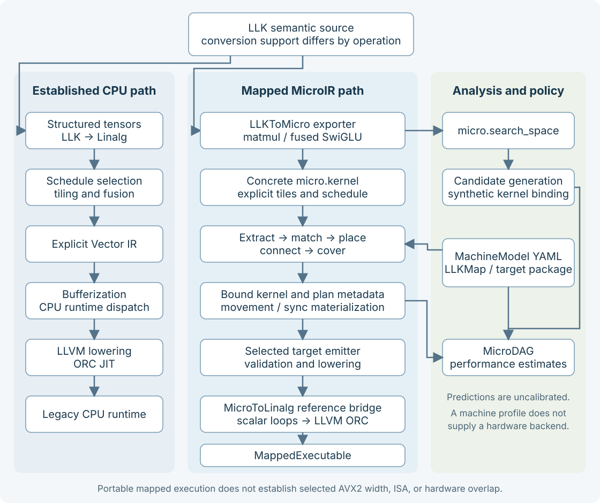

Architecture¶
The compiler separates mathematical semantics, schedule choices, machine facts,
and target implementation. It uses MLIR’s existing tensor, Linalg, Vector, SCF,
memref, and LLVM infrastructure, plus a small semantic llk dialect and the
canonical execution micro dialect.
This page explains the current component boundaries. Start with concepts if tiles, owners, or search spaces are unfamiliar. For runnable commands, use getting started and the tool guides.
Two CPU compilation paths¶
The established LLK/Linalg CPU path and the newer mapped MicroIR path coexist. They share infrastructure but do not yet provide the same execution guarantees.


The two compilation paths and their analysis inputs.¶
The left path is the existing CPU validation pipeline: tensor optimizations, explicit vectorization, bufferization, runtime dispatch, and LLVM lowering. The middle path maps MicroIR and can execute supported kernels through a portable Linalg-based lowering. Its numerical tests establish portable correctness on their fixtures; they do not establish selected AVX2 vector-width or ISA realization. That distinction is central to the current feature limits.
The routes have different semantic coverage. Fused SwiGLU supports the legacy
LLK-to-Linalg conversion; llk.matmul is left untouched by that pass and uses
Micro export plus mapped compilation. RoPE and attention use the established
CPU path and are not current LLKToMicro export roots.
The search branch currently evaluates synthetic candidate kernels. The diagram
does not imply that llk-tune maps, replays, and compiles the original source for
every candidate. That integration is planned.
Components and ownership¶
Component |
Responsibility |
Start reading here |
|---|---|---|
LLK dialect |
Domain operations, assumptions and specialization metadata |
|
Micro dialect |
Tile types, canonical execution/search operations, structural verification |
|
LLK conversions |
Semantic-to-Linalg lowering and supported Micro export |
|
CPU transforms |
Scheduling, tiling, fusion, vectorization, packing and dispatch |
|
|
Topology, validation, queries and model hash |
|
|
Workload graph, declarative matching, placement, routing, search, plan data and verification |
|
|
Target factories, policy files and emitter behavior |
|
|
MLIR pass adapters and canonical plan materialization |
|
|
Search candidate analysis, MicroDAG, model estimates and tuning core |
|
|
Bind, verify, target-lower, lower to executable form |
|
Runtime |
JIT lifetime, descriptor invocation, cache, packed weights and thread pool |
Root CMakeLists.txt owns most library and test registrations. The tools are integration drivers: compiler, optimizer, performance analyzer, tuner, and benchmark.
Mapping from a kernel to a selected plan¶
Mapping consumes a concrete kernel plus a target. The phases have explicit data models so a contributor can inspect one decision at a time:
Phase |
Input → output |
Decision made |
|---|---|---|
Extract |
|
Nodes, value edges, boundary ports and source associations |
Match |
Graph + rules → |
Which single operation or bounded fused group a rule covers |
Place |
Candidate + topology/layouts → |
Executor, compute, memory and solved layout choices |
Connect |
Producer/consumer instances → connection alternatives |
Direct use, routes, transforms or combined movement |
Cover |
Instances/connections → |
A coherent selection covering the workload |
Bind |
Source + plan → cloned mapped module |
Persist selections and materialize required movement/sync |
Verify |
Mapped module + target → diagnostics |
Structure, referenced facts and selected semantic consistency |
The main interfaces are WorkloadGraph.h, MappingRules.h, Placement.h, CoveringSearch.h, and PlanBinder.h.
Search supports deterministic, beam, and exact modes with configurable bounds. Beam search is an exploration heuristic. Exact search explores its bounded candidate/connection space, but the current final-storage check occurs after top-K retention and can lose a more expensive feasible plan. Do not interpret the mode name as a complete physical-feasibility or global-optimality guarantee.
The binder clones the source instead of modifying it in place. It stores
micro.plan, per-operation micro.mapping, and micro.routes, then delegates
canonical movement construction to a materializer. Copies can carry value and
destination-node provenance. A partial binding records unmaterialized decisions;
the executable contract rejects those decisions. Current storage-fact bypasses
and incomplete compute persistence mean that this contract still needs the
repairs documented under issue #129.
Machine facts and target policy¶
MachineModel v2 is a topology of executor, memory, compute, and transfer nodes. Containment and dominance describe hierarchy/visibility; attachment places capabilities at executors; directed links describe legal memory movement. Concrete node IDs distinguish two same-kind resources. Profiles can also declare owner refinements, coordinates, concurrency, and explicit executor equivalence.
LLKMap supplies target policy:
Layouts declare finite parameter domains, constraints, canonical-kind bridges, and optional affine logical-to-physical maps.
Rules match operation/port facts, require capabilities and layouts, declare boundary ports, and select opaque bundles and emitter keys.
Bundles and emitters belong to the target. Generic code may persist and compare them but must not interpret their spelling as target behavior.
The shipped packages are x86-avx2 and generic-ai-accel, with corresponding machine profiles. The generic accelerator demonstrates mapping onto an accelerator-shaped topology; it does not execute accelerator hardware. See the formal LLKMap syntax and its EBNF when authoring policy.
Library boundaries to preserve¶
LLKMachine supplies data and queries. LLKMapping builds generic mapping
decisions above it. LLKPerf consumes mapping cost/event primitives, so the
dependency direction is LLKPerf → LLKMapping, not the reverse. JIT and runtime
dependencies belong in the compilation/integration layer. A new analysis feature
must not make the generic mapping library depend on the performance analyzer or
runtime.
Generic lib/Mapping and lib/Machine must not branch on a target name. New target policy belongs in YAML, LLKMap, or a target package. Canonical ODS also remains free of backend owner vocabulary: an owner/map symbol is resolved through a profile, and concrete IDs belong in selected metadata.
Performance and execution boundaries¶
The performance analyzer turns concrete operations and structural scopes into a MicroDAG, work/byte estimates, dependencies and resource events. Level 0 supplies static bounds; level 1 adds resource scheduling. Mapping also uses cost events and a scheduler to compare plans. Shared primitives are useful, but current planner and bound-kernel costs are not fully equivalent; named DMA occupancy and physical-storage accounting also have known defects.
Mapped compilation runs plan binding, mapped verification, target emitter
lowering, then MicroToLinalg and backend passes. It offers intermediate stopping
points for inspecting mapped MicroIR and target-lowered/lowered forms.
MappedExecutable owns an ORC JIT and calls its wrapper through descriptor
pointers. The current path lowers supported work to scalar Linalg loops and uses
the native host; a selected vector layout can be lost at the tile-to-tensor
conversion. Compiler-allocated buffer release and typed descriptor validation
are also unfinished contracts.
These are active extension areas, not reasons to conflate analysis with target execution. Read the current assessment for reproduced cases and the #129 plan for proposed repairs. Measurement persistence and calibrated prediction remain the separate #51/#52 workstream.
For the established CPU pipeline’s detailed scheduling and runtime design, see ARCHITECTURE.md. For the normative mapping design, see the September 18 specification. Those documents include design goals and historical status; use features for the current community-facing capability summary.